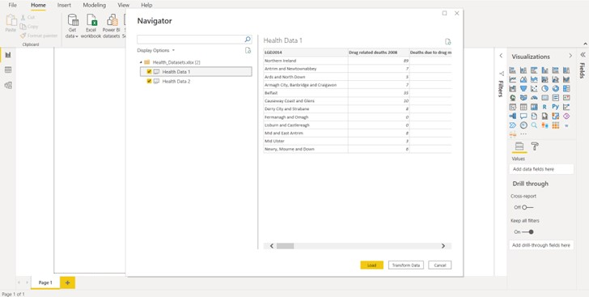
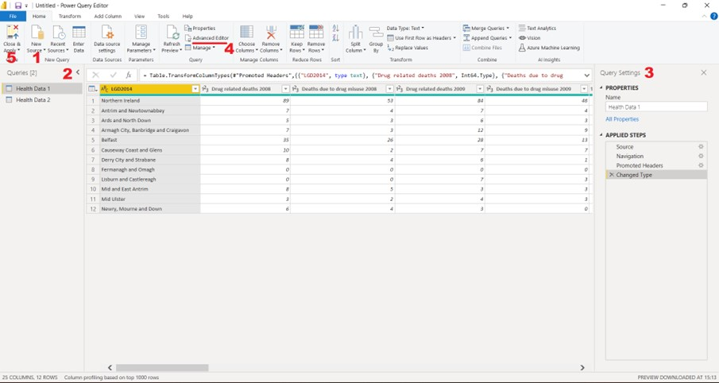

Chapter 8 Power BI
8.1 Introduction
Power BI is part of the Microsoft Power Platform which includes other packages such as Power Automate. Power BI is split into several components: Power BI Desktop, Service, Gateway, Report Server, Premium, Visuals Marketplace and Mobile Apps. The primary focus of Power BI is business intelligence but Power BI can be used for more than standard reporting of data with line charts and bar charts. It can also be used in conjunction with Python and R to create complex custom visuals or it can be used to create and train machine learning models. Power BI can even be used to web scrape data.
With Power BI Desktop, you can connect to different data sources, shape that data through queries, build data models and create visualizations and reports for different audiences. Power BI Service, often referred to as PowerBI.com is a software as service online platform. Reports can be published to the Power BI Service where you can share your reports with other users or a wider audience.
This document is intended to provide a broad overview of the features of Power BI Desktop reports to provide the reader with the necessary tools to start learning and exploring Power BI for themselves. It covers the basics such as importing data, transforming data, visualizing data, using slicer visuals, navigation and basic UI design.
8.1.1 Getting Started
To download Power BI Desktop, go to the Power BI Desktop download page and select Download Free. You can also download Power BI Desktop from the Power BI service. Select the Download icon in the top menu bar, and then select Power BI Desktop.
Once you launch Power BI Desktop you will be welcomed by the Start screen. Here, you can get data sources for your reports, watch video tutorials, check updates and visit the Power BI forums. For now, select the close icon to close the Welcome screen to see the main interface (Figure 1 below).
Screenshot of the Power BI User Interface.
The image above shows some of the most important features in Power BI Desktop.
Get data: This is used for selecting, connecting to and configuring data sources that will be used. A single data source can be used or multiple.
Transform data: This is used to launch the Power Query Editor. The Power Query Editor is where data can be transformed. Transformation usually refers to dealing with missing values or cleaning the data before analysis. The Power Query Editor is a useful tool when working with data sets which need to be cleaned. Working with Power Query Editor is similar to working with Excel and often it is useful to switch between the two as some transformations will be easier in one than the other.
Report View: The report view icon opens the report view canvas which is used for selecting and designing data visualizations. This is the default view open when Power BI is launched.
Data View: The data view provides a view of the data in your model. This view looks similar to an Excel spreadsheet but it is read only.
Relationship View: This is used when your data model has multiple tables and relationships between them. We rarely work with a singular data source in one sheet of a .csv file. More often than not we will have multiple tables from multiple sources. In the relationship view we can build “relationships” between those tables.
8.1.2 Excel as a Data Source
We’re going to use a dummy dataset Health_Datasets.xlsx included in the repository used to host this guide. Download and save the dataset in a folder you can easily locate.
To use Excel data sets as a source, open the Power BI Desktop. Under the Home ribbon find Get Data. Selecting the down arrow next to the Get Data button will show the most common connectors used but clicking the button itself will provide a full list of all available connectors. The list is extensive and Power BI can connect to a wide array of data sources including .csv files, .xlsx and .txt files. Power BI also supports SQL database connections. Whether you click the Get Data button or the arrow you will see Excel at the top of the resulting list. Click Excel Workbook and then click Connect. Navigate to your data source.
Once selected you will see two separate spreadsheets you can choose from.
 Clicking once on the spreadsheet name will let you preview the data while clicking on the checkbox next to the name will include it as part of the data import. Here we have two sheets, Health Data 1 which contains data relating to drug related deaths and deaths due to drug misuse and Health Data 2 which contains population data. This data needs to be cleaned before we can use it so tick both the boxes and then press the Transform Data button on the bottom of the panel. This launches the Power Query Editor. You can also clean your data in Excel then simply press the Load button but some data sets would be too difficult to transform in Excel.
When the Power Query Editor loads you will notice it has its own environment for you to work in.
 There are a number of features in the Power Query Editor to take note of:
New Source: This launches the same interface as the Get Data button.
Queries Pane: The queries pane is a list of all the queries that you have connected to.
Query Settings: Within this pane you can see the complete history of transformations that have been applied to your query. You can also rename the query. This history is useful for several reasons. From here you can rename a query, or click the ‘x’ beside a query to remove a query, and reorder queries by clicking and dragging them into different positions.
Advanced Editor: Power Query Editor uses a programming language informally known as M in the background and when you click any button in the Power Query GUI some M code is generated in the background corresponding to what has been done. By launching the Advanced Editory you can see the M query that is automatically written for you by the Power Query Editor.
Close and Apply: Choosing this option will save your transformations, close the Power Query Editor and load the transformed data into the data model.
The Power Query Editor allows you to shape data with step-by-step instructions for adjusting the data. Shaping the data this way does not affect the original data source, only this particular view of the data. Shaping can mean transforming the data, such as renaming columns or tables, removing rows, replacing missing data entries or changing data types. Power Query Editor captures these steps sequentially under Applied Steps in the Query Settings pane. If you make a mistake or transform the data in a way you aren’t happy with you can simply cancel the transformation by clicking the X that appears beside it in Applied Steps.
8.2 Data Transformation Basics
In its current format the data contained in Health Data 1 will be hard to visualize in Power BI. We essentially have two data sets in one and quantitative data is tied up with qualitative data (Drug related deaths 2008). Ideally, we would like the data to look like this:
| Location | Dataset | Year | Total |
|---|---|---|---|
| Northern Ireland | Drug related deaths | 2008 | 89 |
| Northern Ireland | Deaths due to drug misuse | 2008 | 53 |
| … | … | … | … |
Note how the ‘year’ data and ‘total’ data now have their own columns.
Power Query Editor can help us get there. If we were to unpivot the columns and separate the year into its own column we would arrive at a data set that looks like the table above.
The first step then is to click on the column titled “Drug related deaths 2008” then scroll to the right and shift click on the final column. This will select all but the first column. Right click on any of the selected columns and select Unpivot Columns from the menu. This separates the columns into attribute-value pairs. Next we need to separate out the year data. Right click on the newly generated Attribute column and select Split Column then select By Delimiter.
Splitting by Delimiters.
We want to split this column into two new columns using a delimiter. The best one to choose here is the Space delimiter. We want to split at the right-most delimiter as there is a space right before each year but none after the year. Select these settings and click OK. Change the titles of the columns by double clicking the column header. Finalize your changes by clicking on the Home ribbon and Close & Apply. As soon as you click Close & Apply in the Power Query Editor you will find yourself back in the Power BI Desktop Report View.
These are two of the most common data transformations that data sets will need to have applied to them.
8.3 Visualising Data
Up until now you have spent some time importing data and shaping it. Now we can begin to visualize the data. Power BI is commonly associated with the ability to create impactful, interactive data visualizations. Before we start making visuals it’s worth detailing some of the panes and views available to us:
Navigating the user interface.
The Report View: This is the button that will place us in the Report canvas and allow us to create visuals.
Visuals Area: This is where we can choose which visual we would like to use. Each of the icons represents a type of visualization. Clicking these icons will generate a visual that we can start to work with. Once custom visuals are added they will appear here as well.
Field Area: This area will change depending on the visual but it is where we place the fields (Total, Year… etc.) that we will use within the selected visual.
Field Pane: This pane contains the fields we have to choose from to add to our visual.
Format Area: This is where we can decide on the formatting of our visuals, we can change font sizes, text styles, titles, colors…etc.
Filters Area: This is where we can apply filters of various scopes. We can apply page-level filters which will affect all the visuals on the selected page. We can apply Report-level filters which will affect every visual in the entire Power BI Report and we can apply Visual-level filters which will be applied only to specific visualizations.
8.3.1 Creating a Line-Chart
We’re going to create a line-chart visual that shows both drug related deaths and deaths due to drug misuse. We want to show the totals for each over time and we want to be able to filter by local government district.
The first step in creating any visual is to go to the Visualizations pane on the right-hand side of the UI. Here you can see a range of different visualization icons representing their respective chart. Along the top row are bar charts, in the second row are line charts, area charts and a ribbon chart, below these are pie charts, maps, cards, and even tools to create custom Python and R visuals (Plotly, Matplotlib and Seaborn are three commonly used Python plotting libraries). Find the Icon for the Line Chart and click it. A new visual object will appear on the canvas with a prompt to select or drag fields to populate this visual.
Drag the “Year” field from the fields pane into the Axis box in the field area. Drag the “Total” field into the Values box.
You should get a line-chart that looks like this:
The first line chart.
There’s something not quite right about this visual. We plotted Total by Year but what is it a total of? Our data contained totals for each Local Government District and for two different data sets. Currently, the data for each year is being summed. We’re looking at a line chart showing the sum of all Local Government District drug related deaths and deaths due to drug misuse. We can tell this is the case at a glance by looking to the Fields Pane where the Total has a summation sign (\(\sum\)) to the left of it.
Drag the Dataset field into the Legend box to separate out the data sets. You should see a line-chart like this:
Line chart.
This is closer to what we had hoped to show but it’s still summing over the local government districts. This is where the Slicer visualization becomes useful. Although, we don’t need to use slicers, we could also use the filters pane to simply remove the districts we don’t want to be summed. This can be useful when datasets contain rows of data that we aren’t interested in.
8.3.2 The Slicer Visual
The Slicer visual is used when we want our users to be able to filter by something that isn’t used inside our visuals. The slicer visual only allows one field to be assigned to it but depending on what data type that field is we will have different presentation options. If we pass text data into the field we get a list of check boxes which can be ticked or unticked. If we pass numeric data into the field we will get a slider which can be moved from one numeric value to the next (useful for dates).
Before we create a new Slicer visual it is important to make sure we have deselected the line-chart visual otherwise clicking on a new visual icon will convert this visual into the selected visual type. We don’t want to convert our visual, we want an entirely new visual. Click on the canvas behind the line-chart visual then in the visualizations pane locate the Slicer visual and click on it. A new visual object will appear. Drag LGD2014 from the Fields Pane into the Field box in the Field Area. A checkbox list of local government districts should populate in the visual object on the canvas. It should look something like this:
Filtering data by local government district (LGD).
8.3.3 The Format Area
We now have a line-chart that shows both deaths due to drug misuse and drug related deaths but if we control click multiple local government districts it sums them together. We can change this behaviour by formatting the slicer visual.
Click the slicer visual then click on the Format area selector (the icon that looks like a paint roller). We will be presented with a list of different attributes that we can change. We can change the title, the background, the border and we can add shadows. The important attribute we want to change however is Selection controls. Click the drop-down arrow beside Selection controls and toggle single select on. The result should be something that looks like this:
Filtering data by local government district (LGD) and selecting different regions.
This presentation style has positives and negatives. It’s useful if we know we have lots of visitors who only want to know about their local government district but it’s not very good for comparing different districts. We’re going to use what we have done so far to build a new visual that allows users to directly compare their local government district to another.
Our line-chart visual will use LGD2014 as its legend. Our slicer will have to enable multiple selection. We may also want to include additional slicers to filter the visual by year and by the data set we would like to compare. We will also convert the visual type to a stacked bar chart. The final result should look like this:
The Finished Product.
The new visual should allow us to check multiple boxes and add to the stacked bar chart. We should also be able to filter by year using the slider at the top and we should be able to select the data set we’re interested in using the buttons above the visual.
8.4 Adding a New Page
We can add a new page to our report by clicking the plus sign (+) next to the Page 1 tab at the bottom of the canvas. It makes sense however to duplicate our existing page since we can re-use some of our existing work. Right click on the Page 1 tab and select Duplicate Page.
Select the line-chart visual and change the legend in the Fields Area from Dataset to LGD2014 by clicking on the X to the right of Dataset and dragging in LGD2014 from our Fields Pane. Now click on the stacked column chart icon in the Visualizations Pane to convert the visual. Some conversions work better than others, it’s always worth checking that the visual is showing the same data before and after conversion. A conversion from a stacked bar chart to a card visual or KPI visual may not be the best choice for instance.
We will need to edit our location filter (the slicer) to allow for multiple selections. Click on the slicer visual and go to the Format Area. Under Selection Controls toggle Single Select to Off and ensure that Multi-select with CTRL is toggled to the on position and Show “Select All” Option is toggled to the Off position. We can now select multiple local government districts and they should stack on top of one another in the stacked bar chart visual. We will need two new slicer visuals.
Click on the canvas to ensure no visuals are selected. Select the Slicer Visual in the visualizations pane. Drag the Year field into the Field box. The slicer should automatically detect numeric data and generate a slider that takes values in the range 2008 to 2019.
We need one more slicer. Again ensure no visuals are currently selected and select the Slicer Visual. Drag the Dataset field into the slicer’s field. A checkbox will be generated. We would prefer buttons this time so go to the Format Area and select the General option. Scroll down until you see Orientation. Click on the drop down menu and select Horizontal. Under Selection Controls you might want to toggle Single select to on.
Finally, we can add some data labels to our visual. Select the line-chart visual by clicking on it. In the Format Area scroll down until you see Data Labels and toggle them on.
8.6 Population Data
The second sheet “Health Data 2” is very similar in format to the first but with population data for each Local Government District. Try and create some more visuals for this data by applying the techniques demonstrated.
8.7 Additional Resources
This session was designed as a tour of the main features of Power BI reports. It has skipped a lot of detail to try and give a broad overview of what is possible with Power BI and provide the basic skills needed to start experimenting with the software package. The Power BI Documentation should provide a more in depth look at the fundamentals. Microsoft Learn has a number of modules dedicated to Power BI which are mostly related to Data Analysis learning pathways. Completing these modules will be useful for consolidating the fundamentals and learning more about Power BI in greater detail. If you’re really interested then it might be worth reading into Data Analysis Expressions (DAX) which is a library of functions that can be used to build formulas and expressions in Power BI, Analysis Services, and Power Pivot in Excel data models. This is especially useful in Power Query Editor.